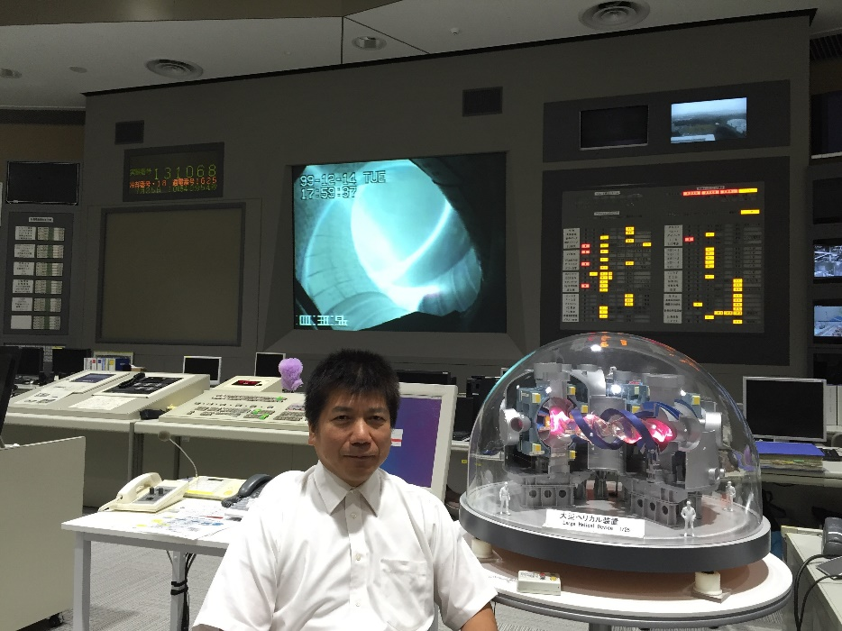

田中謙治研究室のホームページへようこそ!! 主に大学院進学を検討されて、これから研究生活を始めようと考えている方を対象に研究の概要を説明します。現在行っている最新の研究成果については随時更新していく予定です。(現在準備中)
田中謙治研究室は九州大学大学院総合理工学府総合理工学専攻プラズマ・量子理工学メジャーの研究室です。本研究室は自然科学研究機構核融合科学研究所と連携で講座を運営している連携講座で、岐阜県土岐市の核融合研究所内に設置されています。講座を主宰する田中謙治教授は核融合科学研究所に所属し、九州大学の教授を併任しています。連携講座とは九州大学と国内の他研究機関が共同で大学研究室を運営するシステムです。これにより、連携大学院生は所属大学院の教育を受けつつ、最先端の研究に参加することができます。学位は九州大学の修士/博士を取得することとなり、専門は「工学/理学/学術」から選択します。
研究室の所在する岐阜県土岐市は隣接する多治見市とともに戦国時代より焼き物の町として栄えた地域です。土岐市では伝統のある焼き物作りと新しいエネルギーを目指した最先端のプラズマ研究が共存しています。大学院進学を検討されている方で核融合科学研究所を訪問されたい方は旅費の補助が可能なのでご連絡ください。
本研究室では磁場閉じ込め核融合を目指した高温プラズマ閉じ込め装置、大型ヘリカル装置(Large Helical Device ; LHD)においてプラズマの閉じ込め研究を行っています。本研究室の方針はレーザーやマイクロ波を用いた新しい計測装置を作り、それを用いて新しい物理を見出すことです。ただ物理的に面白いだけでなく、研究結果が将来建設する核融合炉にどのように役に立つかということを意識しながら研究に取り組んでいます。(LHDは2025年12月の実験をもって終了しました。今後の研究はLHDの過去の実験データ解析、2027年より稼働予定のCHD、茨城県那珂市で稼働開始予定の大型装置JT-60SAでの実験に移行予定です。)
本ホームページでは研究室で取り組んでいる研究だけでなく、研究の背景についてもお話ししています(“核融合とは”の頁)。“大型ヘリカル装置”の頁では核融合研が所有する大型ヘリカル装置とはどのような装置で何をしているかについてお話します。“プラズマ実験”の頁では核融合研究はどのような研究をしているのか全体像をお話ししたうえでLHDでの実験の一例を紹介します。“干渉計とトムソン散乱”の頁では我々の研究室で取り組んでいる干渉計とトムソン散乱について計測原理を少しく詳しくお話しします。そのあとで“研究紹介”の頁を読んでいただければ我々の研究の内容も分かっていただけると思います。大学院での教育と活動状況についてはあえて学生目線で紹介するために研究室の学生に書いてもらいました。“大学院教育”と“活動状況”の頁をご参照ください。それから、皆さんからよく聞かれる質問については“田中先生に聞いてみよう”にまとめておきました。
2011年3月11日の東日本大震災と、それに伴う福島原発の事故は我々に多くの教訓を与えました。実は私が大学生の1980年代後半のころ勉強した電気エネルギーに関する教科書では原発の事故は隕石が落下して事故を起こす確率より小さいと書かれてあったのです。ところが、1986年に旧ソ連(現ウクライナ)のチェルノブイリ原発の事故(それ以前に1979年に米国スリーマイル島原発での炉心融解事故もありました)、そして、2011年3月に福島原発の事故が起き、原子力発電に対する安全神話はもろくも崩れ去ってしまいました。千年に一度しか起こらないような地震による事故だったとはいえ、対策次第では炉心融解に至るような深刻事故には至らなかったという指摘もあり、それについては現在も議論されています。第三者的な立場から安全管理が不十分であったことを非難することはできますが、手法が全く異なるとはいえ、核反応によるエネルギー源の開発に従事している研究者としては、今回の事故を引き起こした原因を自らの問題として、教訓を学ばなくてはなりません。本研究室の研究内容を説明する前にまずは、現在電気を供給している核分裂発電(原子炉)と我々が研究に取り組んでいる将来的に目指している核融合発電についての原理をお話しします。それでは田中謙治研究室のツアーに参りましょう。トップページより“核融合とは”のページに進んでください。

田中謙治教授 大型ヘリカル装置制御室にて